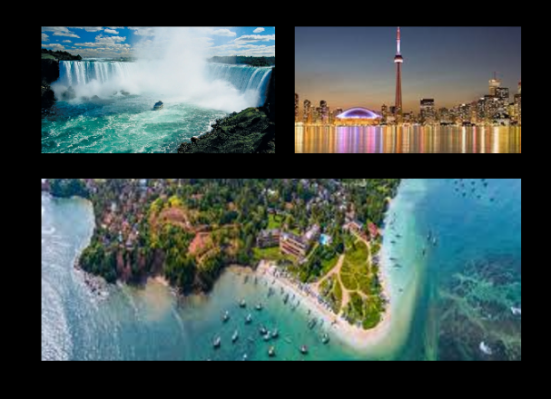
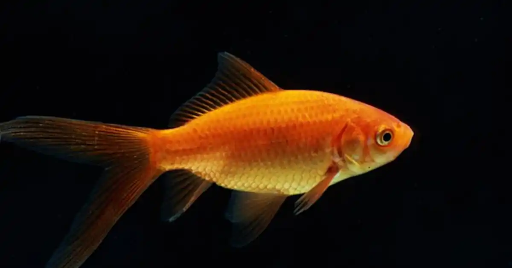
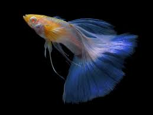

| HOME | HOBBIES/INTERESTS | PORTFOLIO | REFERENCES |
Hi, I am Karshan! Currently, I am attending Victoria Park Collegiate Institute as a Grade 11 student. I currently live in the west end of Toronto, in Scarborough. I am a math and science enthusiast, that also enjoys good music. Scroll down to learn more about me.
|  | ||
|---|---|---|
|
|
|
I haven't visited many places, however in each of these places I have spent a lot of time looking for great things. In Niagra Falls, I spent an entire 24 hours walking around and exploring the place. In Sri Lanka, I have been there 5 or 6 times, and stay there for 2 months at a time. That's nearly a year spent there. I enjoy being in my place of birth, and am longing to go back, as soon as possible. The CN Tower was a good way to see life in a different perspective, and made me see things I wouldn't have seen at ground level. These three experiences have changed my perception of the world I live in.
Now, I will be sharing my pets.
|
 |  |
Now, having pet fish, in my humble opinion, is a fun experience. There is little to no effort required to take care of these aquatic friends and you can watch them swim around all day. This is the whole reason why fish are my pet of choice. However, in the future, I would like to get a German Shepherd to be there with me always. |
Now, you have a general idea about who I am, take a look at my accomplishments by going to the navigation bar. Click here to go to the navigation bar.